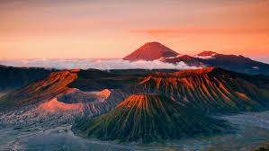
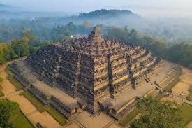
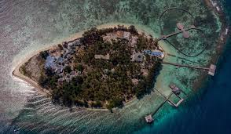

Jelajahi pesona alam, budaya, dan sejarah Pulau Jawa yang memukau — dari gunung, pantai, hingga kota bersejarah yang memikat hati.

★★★★★ · Probolinggo, Jawa Timur
Gunung berapi aktif dengan pemandangan sunrise yang luar biasa indah. Menjadi ikon wisata Indonesia dengan lautan pasir yang luas dan suasana magis di pagi hari.
Lihat destinasi
★★★★★ · Magelang, Jawa Tengah
Situs warisan dunia UNESCO ini merupakan candi Buddha terbesar di dunia. Arsitekturnya megah dan menjadi simbol kebanggaan budaya Indonesia yang mendunia.
Lihat destinasi
★★★★☆ · Jepara, Jawa Tengah
Kepulauan tropis dengan pantai pasir putih dan air sebening kristal. Cocok untuk snorkeling, diving, atau sekadar bersantai menikmati keindahan alam laut Jawa.
Lihat destinasiDari pegunungan hingga pesisir, Pulau Jawa menawarkan berbagai keindahan yang tak terlupakan. Yuk, rencanakan perjalananmu sekarang!
Jelajahi Lebih Banyak di Jawa